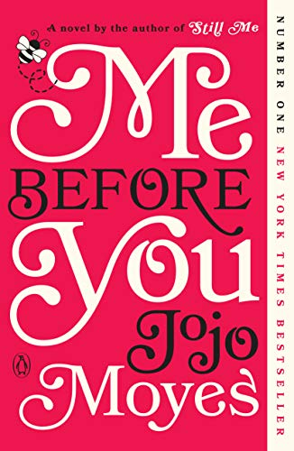
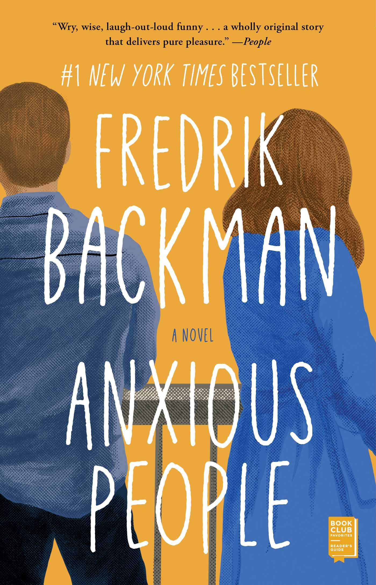
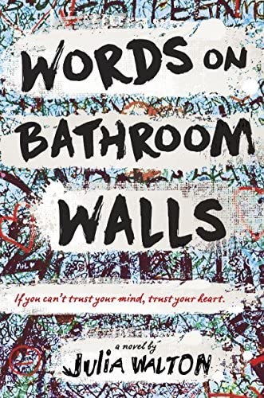
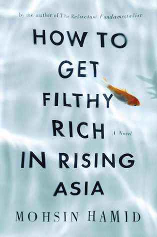

This is a thought-provoking "deep" novel. It's not intended to be a fast-paced, plot-heavy novel, it's intended to make you think. You take the perspective of a man just going about his life, and yet having the courage to ask the deepest questions. I found it beautiful and freeing.
The main focus of this book is about life and the importance of choices. It's much more than a skin-deep romcom, in fact it has a rather subtle romantic arc. The storyline is well thought out and made me feel all the emotions (of which there were many) without seeming to try too hard.
This book impressed me. It has an interesting plot and feels like a thriller, but is about humanity - the ugly sides and the hopefulness. Full of relatable, introspective quotes you'll remember for a long time, but also never venturing into preachy life advice territory.
Follow a teen boy with schizophrenia who struggles to live a normal life while dealing with family issues and high school. An honest and relatable read depicting what it's like to live with mental illness. It's written like journal entries, which gives it a trustworthy and personal touch.
An incisive, moving novel that follows our character's development and tells a coming-of-age story even as it parodies a self-help book. It illuminates the inner turmoil of its protagonist while simultaneously revealing truths about social issues.